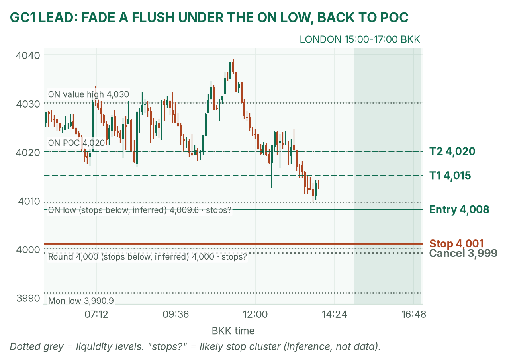
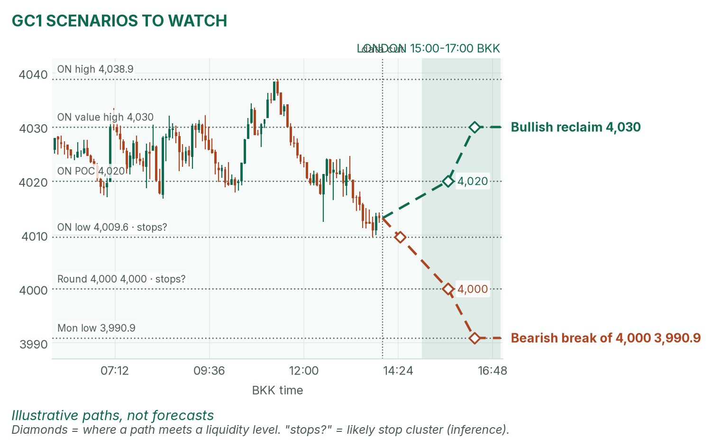
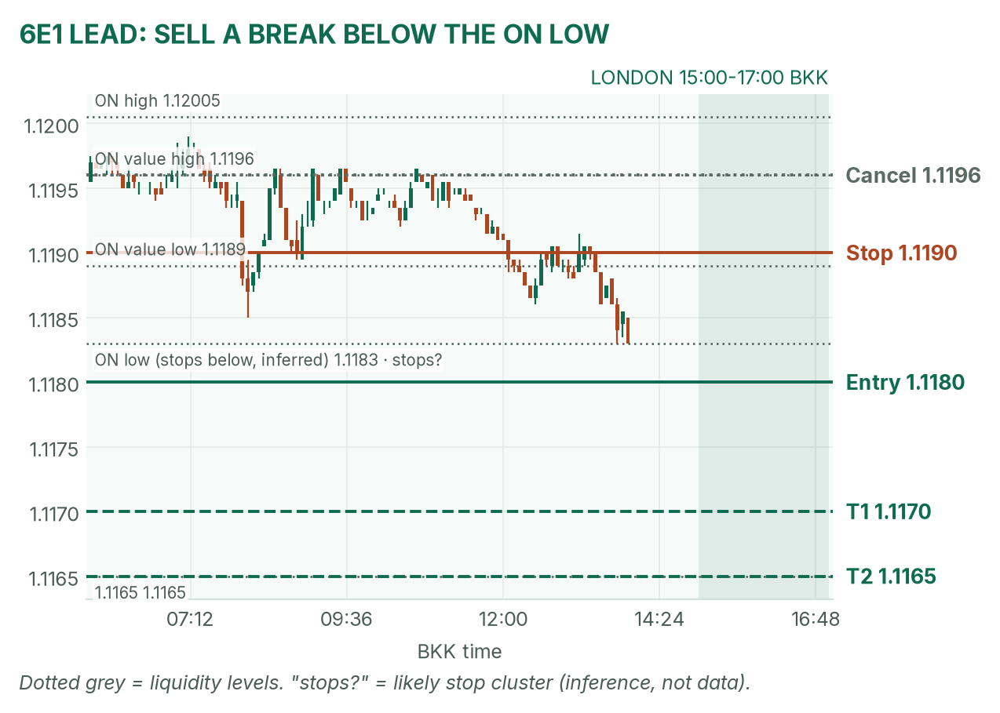
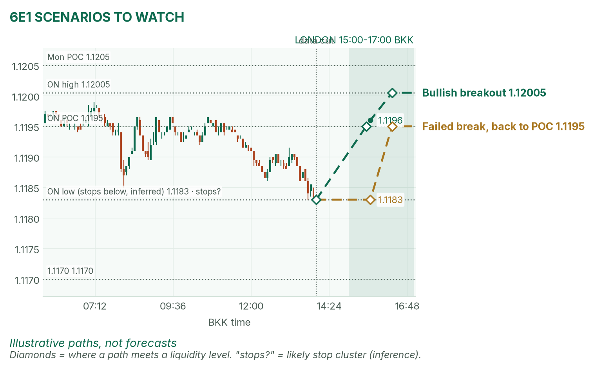

Gold slipped under its overnight floor. The euro is sitting on its low.
Window 15:00–17:00 BKK (UK on winter time). Data cut 14:00 BKK: GC 4,013.1, 6E 1.1183 (TopstepX Z26, last complete 5m bar). Levels only. Ideas, not advice.
Summary
GC: buy a flush under 4,009.6 that closes back above it. Entry 4,008, stop 4,001, target 4,020 (1.7R). About 40%.
6E: sell a 5-minute close below the 15:00–15:30 range low and 1.1183. Entry 1.1180, stop 1.1190, target 1.1165 (1.5R). About 36%.
No scheduled release inside the window. US data starts at 19:30, after it.
Flat by 17:00, no matter what.
The market story
All three main contracts drifted lower in Asia. A firmer dollar is the main push: the dollar index is up 0.13%. Gold is priced in dollars, so a stronger dollar weighs on it. Gold lost April's 4,012.4 low and touched 4,009.6 at 13:45. The euro slid to 1.1183, a fresh overnight low, and has closed lower for three straight days.
Rates matter here too. The 10-year US yield is 4.97%, just under 5%. Higher rates make holding gold, which pays nothing, more costly. The Fed's meeting starts today, with a hold about 90% priced. The day before a Fed decision is often quiet until US data, so the London window may stay range-bound.
How I read it: gold is stretched to the bottom of its overnight range and tends to snap back to its busiest price; the euro is leaning down with the dollar.
News (BKK)
Time
Event
Forecast
Prior
Read
19:30
US durable goods orders (orders for long-lasting goods)
+1.8% to +1.9%
not in my source
After the window. Hot means a firmer dollar, so weaker gold and euro.
21:00
US consumer confidence
80.5 to 80.9
81.9
After the window. April's likeliest trigger for a euro break.
No release inside 15:00–17:00, so no no-trade zone today. An Iran or Israel headline can hit any time.
Levels to watch
Level
GC
6E
Overnight high
4,038.9
1.12005
Overnight value area (where 70% of trading happened)
4,019–4,030
1.1189–1.1196
Overnight POC (busiest price)
4,020
1.1195
Overnight low
4,009.6
1.1183
Monday high / low
4,044.0 / 3,990.9
1.1249 / 1.11965
Monday POC
4,031
1.1205
Typical window range (median / 80th pct, 20 days)
16 / 21 pts
20 / 31 pips
Gold (GC1)
Bias: down on the bigger picture, but stretched for the next two hours. My London gold rule fades the edges of the 15:00–15:30 range back to the POC. Price is at the bottom edge, with the round 4,000 just below.
The trade: fade a flush under the overnight low
Entry
4,007–4,009 (plan 4,008): after 15:30, a dip under the range low and 4,009.6 that closes back above 4,009.6 on a 5m bar
Stop
4,001: if 4,000 comes into play, the fade is wrong.
Targets
1R partial 4,015 · full target 4,020, the overnight POC (1.7R)
Cancel
Price trades 3,999 before entry, the range low sits under 4,004, or no fill by 16:15
Probability
~40%, an estimate. Basis: London gold ranges mostly failed and snapped back to the POC in my Aug–Oct study (not significant); 12 points to target is under a typical 16-point window.
Why: sell orders likely sit just under 4,009.6 (an inference). A stop run, a quick poke that triggers those orders and then reverses, often marks the low. April half-agrees: she warned that losing 4,012.4 brings the 4,000 test back. If 4,000 trades, stand aside.

GC 5-minute bars to 14:00 BKK, window shaded. Price sits just above the 4,009.6 overnight low, with 4,000 below.

Illustrative paths, not forecasts: a reclaim of the POC and a break of 4,000.
Scenarios to watch
Bullish reclaim: two 15m closes above 4,020. Aims for 4,030, the overnight value high.
Bearish break: a 15m close below 4,000 runs the stops there. Aims for 3,990.9, Monday's low.
Euro (6E1)
Bias: down. The dollar is firmer, the euro has slid three days in a row, and price is pressed against the overnight low. My London rule for 6E is to trade breaks of the 15:00–15:30 range.
The trade: bearish range breakout
Entry
1.1179–1.1181 (plan 1.1180), on a 5m close below the 15:00–15:30 range low and 1.1183
Stop
1.1190: back inside the overnight value area
Targets
1R partial 1.1170 · full target 1.1165 (1.5R)
Cancel
Price trades 1.1196 before entry, or no fill by 16:30
Probability
~36%, an estimate. Basis: euro London breakouts averaged +0.31R in my study (26 sessions, not significant); 15 pips is about three quarters of a typical window.
Why: it trades with the dollar and the three-day slide. April half-agrees: she sees a firmer dollar but expects the real break at 21:00. If it breaks and closes back above 1.1183 within 15 minutes, get out.

6E 5-minute bars to 14:00 BKK. A slow 17-pip slide from 1.12005 to the 1.1183 low.

Illustrative paths, not forecasts: a break up and a failed breakdown.
Scenarios to watch
Bullish breakout: a 5m close above the range high and 1.1196. Aims for 1.12005, the overnight high.
Failed break: a poke under 1.1183 that closes back above it. Aims for 1.1195, the overnight POC.
NQ (not traded in London): 29,322.5, at its overnight low of 29,313.5.
Before you click
ORB bases. GC London: 15:00–15:30 range, fade to POC. 6E London: 15:00–15:30 range, trade breakouts.
Checklist. 1) Room to today's max loss? 2) Within daily rules? 3) No release within 30 minutes? 4) Agrees with the bias? 5) At a marked level? 6) Setup tagged? 7) Entry, stop, 1R partial, target set? 8) Calm, not chasing?
Reset (60 seconds). Breathe in 4, hold 4, out 6, five times. Name the feeling in one word. Say the plan aloud. "Eager" or "frustrated"? Wait 5 minutes.